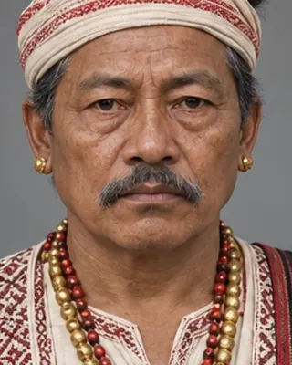

1706–1708 · Dimasa king

Declared independence; Rudra Singha invaded Maibong in December 1706 and destroyed its fort. Tamradhwaj fled to Jaintia and was imprisoned.
Record confidence: high.
Open interactive profile
1706–1707